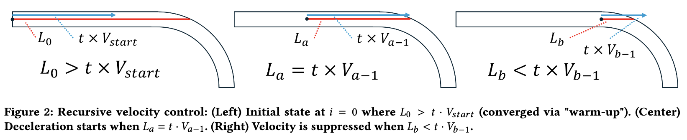

Steering Models with Preview-Based Velocity Control
曲率が変化する経路に対するステアリング時間予測モデル

概要
ユーザが進行方向の先を見越して速度制御するという仮説をモデルに導入し、従来のSteering Lawでは表現しにくかった曲率変化の影響を説明する研究です。
研究背景
GUIにおいてカーソルをパス（経路）に沿って動かすステアリング操作は、階層メニューのナビゲーションや描画など基本的な場面で使われる。従来のSteering Lawはパスの局所的な幅を積分して移動時間を推定するが、コーナーや曲率が変化するパスでは精度が落ちることがある。ドライバーが前方のカーブを見て速度を落とすように、人間もパスの先を見ながら速度を調整しているのではないかという仮説に基づいて新たなモデルを検討した。
手法・実装
パスの前方にある幾何的特性（曲率等）を視覚的制約として速度制御に組み込む先読み速度制御（Preview-Based Velocity Control）モデルを提案した。コーナー曲率が大きいほど手前で減速する挙動をモデル化し、パラメータを必要としない簡易版も導出した。既存のSteering Lawおよびその拡張モデルとの比較実験を行った。
評価結果
曲線を含むパスにおいて提案モデルはadjusted R² = 0.983を達成し、既存モデルよりも高い精度を示した。パラメータチューニングなしの簡易版でもadjusted R² = 0.972と近い水準を保っており、実用的な難易度指標として使いやすいことがわかった。
考察・今後
今回はコーナーを含むパス形状を対象としたが、3次元空間でのステアリングや、より複雑なパス形状（複数曲率の連続コーナーなど）への対応は今後の課題になる。階層メニューやツールバーの形状設計の難易度推定にも応用できると考えている。
Publications
-
Deriving Steering Time Models for Paths with Corners of Varying Curvature Based on Preview-Based Velocity Control
Koyo Motoe, Nobuhito Kasahara, Shota Yamanaka, Wolfgang Stuerzlinger, and Homei Miyashita.
CHI EA 2026, Article 204, 1-6.